Una página demasiado convincente
Objetivo
Objetivo general
Implementar y analizar, en un entorno de laboratorio controlado, una simulación de ingeniería social mediante Social-Engineer Toolkit (SET), utilizando una página web ficticia para comprender el funcionamiento de una técnica de captura de información y reconocer los elementos que permiten identificar un intento de phishing.
Objetivos específicos
- Configurar un escenario básico de ingeniería social utilizando Social-Engineer Toolkit (SET).
- Implementar una página web ficticia mediante el módulo Credential Harvester.
- Analizar el proceso mediante el cual la información introducida en un formulario web es transmitida y registrada por un servidor.
- Identificar indicadores técnicos y visuales que permitan reconocer una página potencialmente fraudulenta.
- Proponer controles de seguridad orientados a prevenir o reducir el impacto de ataques de phishing.
Descripción del escenario
El área de seguridad informática de una organización ha recibido varios reportes de empleados que aseguran haber recibido un mensaje relacionado con una supuesta actualización de sus credenciales. El mensaje contiene un enlace que dirige a un portal aparentemente institucional. La página incluye logotipo, campos de usuario y contraseña y un mensaje indicando: “Su sesión ha expirado. Inicie sesión nuevamente para continuar.” A primera vista, nada parece fuera de lo común. Sin embargo, el portal no pertenece a la organización.
Configuración de laboratorio
Se usa la maquina virtual del sistema Kali Linux para hacer uso de la herramienta Social-Engineer Toolkit (SET).
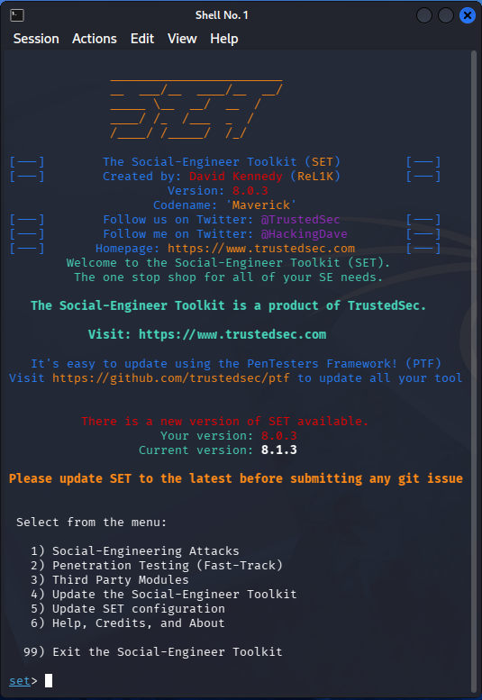
Se crea una página web con el nombre Index.html la cual simulará un sistema institucional de autenticación con los siguientes elementos: nombre del sistema, campo de usuario, campo de contraseña, botón de ingreso, mensaje relacionado con la expiración de una sesión.
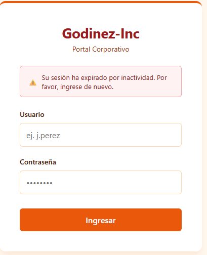
Implementación
En Kali Linux nos dirigimos al menú principal y en el apartado 03 – Initial Access encontraremos el acceso a setoolkit o también podemos buscarlo con este nombre en la barra de búsqueda y lo ejecutamos.
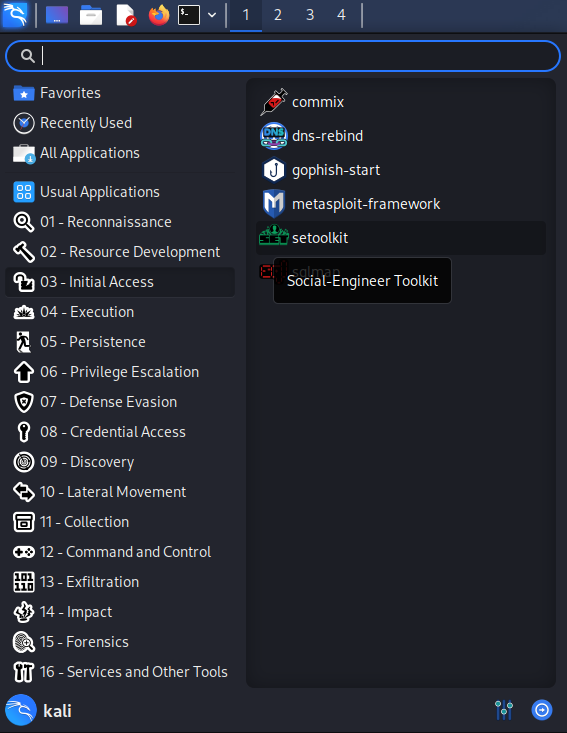
Se nos desplegara la siguiente en pantalla e ingresaremos el numero 1 Social- Engineering Attacks.
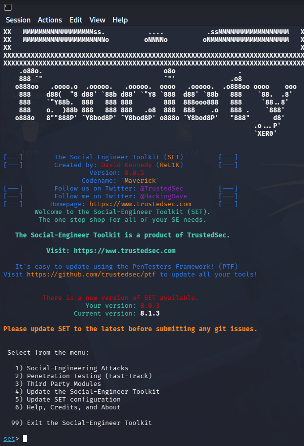
Ahora ingresaremos a la opción numero 2 Webside Attack Vectors.
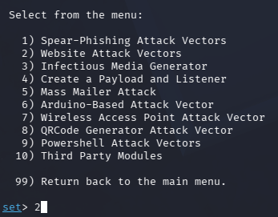
Ahora ingresaremos al modulo 3 Credential Harvester Attack Method.
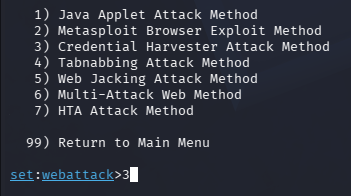
En este menú nos muestra 3 opciones de como podemos usar esta herramienta que es usando sitios web predefinido, clonando la página de un sitio y en este caso tenemos ya una página diseñada específicamente para la prueba de laboratorio escogeremos la opción 3 Custom Import.
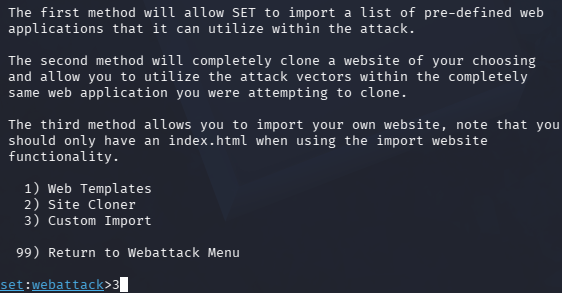
Al momento de ingresar la opción anterior se levanta un servidor web local que nos servirá para este entorno controlado y nos dará la dirección IP del servidor que pertenece a máquina virtual Kali Linux.
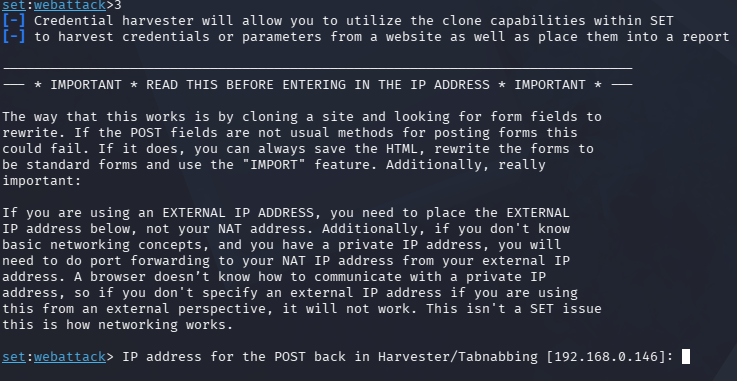
Al presionar enter nos pedirá la ruta dentro de nuestro equipo de la pagina web diseñada para este laboratorio se encuentra en el escritorio.
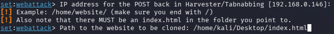
Después nos pedirá la dirección real del sitio web para que después de dar nuestros datos de acceso nos llevara a este sitio y evitar sospecha, sin embargo, como esto es ficticio ponemos la web de Google.
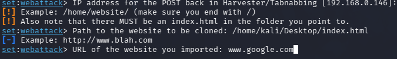
Finalizando esto el programa se pondrá en espera de los datos sean ingresados.
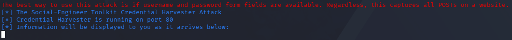
Ingresamos a nuestro navegador e ingresamos a la dirección de servidor local localhost y nos desplegara la pagina web que hemos diseñado indicando que nuestra sesión expiro por lo cual debemos de ingresar nuestros datos
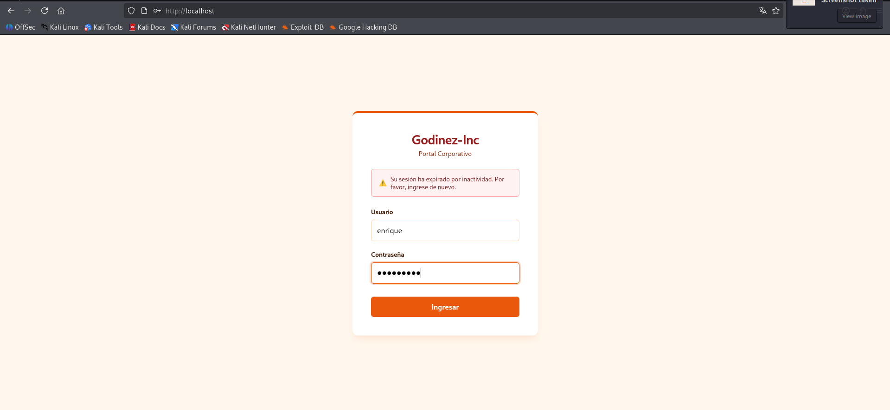
Después de ingresar los datos y dar clic en el botón correspondiente nos llevara al sitio configurado en pasos anteriores en este caso la página de Google. Una ves enviado el formulario si regresamos a la terminal donde estábamos ejecutando nuestro modulo aparecerán las credenciales obtenidas en este caso el nombre de usuario enrique y la contraseña P4l0m4537.
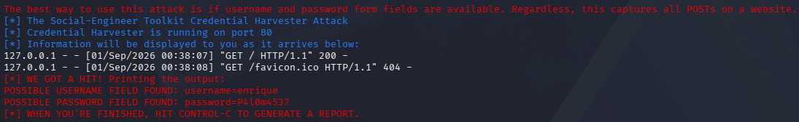
Al finalizar nuestro modulo nos creara un reporte xml con los datos obtenidos en la siguiente ruta /root/.set/reports/.
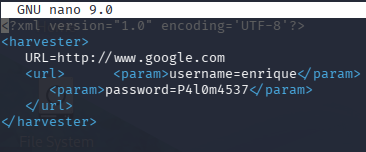
Controles de seguridad propuestos
Personales
- No abrir nunca archivos adjuntos de remitentes desconocidos ni hacer clic en enlaces de fuentes sospechosas.
- Utilizar un navegador y software actualizados.
- No contestar nunca al spam.
- Evitar el uso de conexiones Wi-Fi públicas o redes inseguras.
Organizacionales
- Llevar a cabo sesiones de formación periódicas y exhaustivas sobre seguridad.
- Activar y exigir la autenticación multifactor (MFA).
- Asignar permisos adecuados a todos los usuarios y dispositivos.
Conclusión
Este tipo de ataque combinado con el descuido de los usuarios ya sea comunes o de empresas, ya sea por costumbre o desconocimiento, no se tiene el criterio para inspeccionar los sitios web de manera que nos demos cuenta que este es legítimo, el uso de este modulo me ha hecho comprender lo fácil que puede ser para un atacante hacerse de contraseñas de sistemas de empresas o contraseñas de información vital para el usuario o cuentas bancarias sin embargo implementando estas medidas propuestas para evitarlo mejora nuestra seguridad de manera significativa.